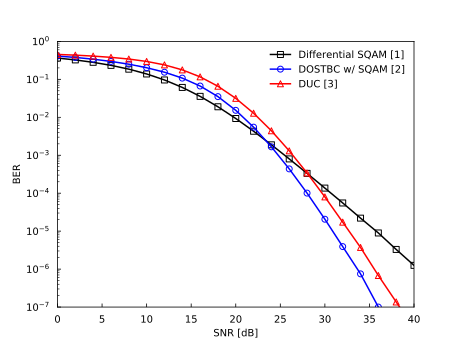

SemiUnitaryDifferentialMIMO-IdealRayleigh-BER.py¶
This webpage introduces an API example for the noncohrent scenario, which uses SemiUnitaryDifferentialMLDSimulator.. Other examples are found in SemiUnitaryDifferentialMLDSimulatorTest.
This example compares the BER performance of the differential star-QAM (SQAM), differential orthogonal space-time block code (DOSTBC) with SQAM, and diagonal unitary code (DUC) schemes. The simulation parameters are given in the table below.
Performance Results¶

Simulation Parameters¶
Parameter |
Value |
|---|---|
Channel |
Ideal Rayleigh fading |
Number of transmit antennas |
\(M=2\) |
Number of receive antennas |
\(N=2\) |
Constellation size |
\(L=16,256\) |
Transmission rate |
\(R=B/T=8/2=4\) [bit/symbol] |
Reproducible Code¶
import sys
import numpy as np
import matplotlib.pyplot as plt
from imtoolkit import Parameters, Modulator, OSTBCode, DiagonalUnitaryCode, TASTCode, IdealRayleighChannel, DifferentialMLDSimulator, SemiUnitaryDifferentialMLDSimulator
plt.switch_backend('agg')
plt.rcParams['xtick.direction'] = 'in'
plt.rcParams['ytick.direction'] = 'in'
plt.rcParams['markers.fillstyle'] = 'none'
def simulateBER(argstr):
params = Parameters(argstr)
if params.code == "symbol":
codes = np.array(Modulator(params.mod, params.L).symbols).reshape(params.L, 1, 1)
elif params.code == "OSTBC":
codes = OSTBCode(params.M, params.mod, params.L).codes
elif params.code == "DUC":
codes = DiagonalUnitaryCode(params.M, params.L).codes
channel = IdealRayleighChannel(params.ITi, params.M, params.N)
if params.sim == "diff":
sim = DifferentialMLDSimulator(codes, channel)
elif params.sim == "sudiff":
sim = SemiUnitaryDifferentialMLDSimulator(codes, channel)
return sim.simulateBERParallel(params, outputFile=False, printValue=False)
if __name__ == '__main__':
fig, ax = plt.subplots()
ax.set_xlabel("SNR [dB]")
ax.set_ylabel("BER")
ax.set_xlim(0, 40)
plt.ylim(1e-7, 1e0)
plt.yscale("log")
ax.tick_params(pad=8)
ret = simulateBER("BERP_sim=sudiff_channel=rayleigh_code=symbol_M=1_N=2_L=16_mod=SQAM_ITo=1e3_ITi=1e5_snrfrom=0.00_to=40.00_len=21")
ax.plot(ret["snr_dB"], ret["ber"], color="k", marker="s", linestyle="-", label="Differential SQAM [1]")
ret = simulateBER("BERP_sim=sudiff_channel=rayleigh_code=OSTBC_M=2_N=2_T=2_L=16_mod=SQAM_ITo=1e3_ITi=1e5_snrfrom=0.00_to=40.00_len=21")
ax.plot(ret["snr_dB"], ret["ber"], color="b", marker="o", linestyle="-", label="DOSTBC w/ SQAM [2]")
ret = simulateBER("BERP_sim=diff_channel=rayleigh_code=DUC_M=2_N=2_T=2_L=256_ITo=1e3_ITi=1e5_snrfrom=0.00_to=40.00_len=21")
ax.plot(ret["snr_dB"], ret["ber"], color="r", marker="^", linestyle="-", label="DUC [3]")
handles, labels = ax.get_legend_handles_labels()
legend = ax.legend(handles, labels, loc="best", frameon=True)
frame = legend.get_frame()
frame.set_facecolor('white')
frame.set_edgecolor('white')
#plt.show()
plt.savefig(sys.argv[0].replace(".py", ".svg"))